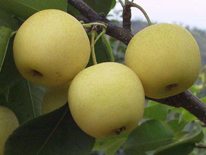

方城羊肉烩面:
方城羊肉烩面是河南省南阳市方城县的特产。羊肉烩面是河南著名的特色小吃，深受人们的喜爱。烩面的起源地是河南省南阳市方城，方城烩面名满天下。烩面是河南汉族特色美食，有着悠久的历史。它是一种荤、素、汤、菜、饭聚而有之的传统风味小吃，以味道鲜美，经济实惠，享誉中原，遍及全国。烩面按配料不同可分为：羊肉烩面，牛肉烩面，三鲜烩面，五鲜烩面等等。烩面的起源地是河南省南阳市方城，方城烩面名满天下。 羊肉烩面是河南著名的特色小吃，深受人们的喜爱。其汤，浓酽醇厚；面条，鲜香有韧劲；羊肉，鲜嫩酥烂。做羊肉烩面有三要素……

博望黄金梨:
博望坡黄金梨是河南省南阳市方城县博望镇的特产。博望坡黄金梨外观美丽、形圆色黄、果皮光滑细腻，蜜汁四溢，香甜爽口。博望是农业大镇，近年来培育了烟叶、蔬菜、黄金梨三大品牌产业，其中博望坡黄金梨在品牌产业中最耀眼夺目，是1推荐果品和上海世博会的参展产品。目前，镇域种植总面积3000亩，镇区基地1200亩，王岗村600亩，毛庄村400亩，前荒村800亩。 博望黄金梨在上市之初就没愁过销路，随着声誉日隆，产品更是供不应求。2007年底，在北京奥运推荐果品综合评选活动中黄金梨通过“奥运推荐果品”认证。
麦烧:
清光绪年间，方城县城内开化寺街马玉亮（回族），始创烧麦。最初不叫烧麦叫撮子包，因感其名不雅。又因其边象快熟的麦穗，随改名为烧麦。 烧麦是方城著名民间风味小吃，盛誉百年。每年只做两笼，每笼400个左右。烧麦上市，即抢购一空。故此名传四方。 方城烧麦的做法： 一、选个大、水凌的萝卜，洗净切片，在锅内煮至能用手撮烂为止。然后，用白布包好将水挤干，剁碎。二、选较肥的羊肋肉，剁碎成沫。三、选择白长的大葱，去皮、除叶，切成薄片。四、选上等酱油、五料面、好清香油，优质味精。五、选上等细面粉，用温水搅拌反复轧揉……:
益母膏:
杨清型益姆膏是方城广阳镇北5公里外的三贤山道教名药，历史悠久，名誉当地。现由华山派第二十四代弟子杨清型及毕业于张仲景国医大学的杨金波先生，经过数十年的潜心研究，运用药食同源的中华本草精华，采用玉竹、山药、龙眼肉、益智仁、阿胶、大枣、黄精等补虚药物，佐以消食的山楂，解表的白芷、利水渗湿的茯苓、收芷的芡实及化湿的砂仁和化痰、平喘的桔梗，经传统熬制和现代工艺精制而成的有机性食疗膏剂。能全方位调理人体阴阳五行，脏腑经修，气血津液，从而达到心火生脾土，脾土生肺金，肺金生肾水、肾水生肝木、肝木生心火，充分提……: